2017年北京市中考数学试题 原卷解析
2017年北京市中考数学试卷
一、选择题（本题共30分，每小题3分）
1．（3分）（2017•北京）如图所示，点P到直线l的距离是（ ）
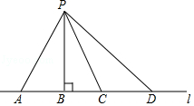
A．线段PA的长度B．线段PB的长度C．线段PC的长度D．线段PD的长度
【考点】J5：点到直线的距离．菁优网版权所有
【分析】根据点到直线的距离是垂线段的长度，可得答案．
【解答】解：由题意，得
点P到直线l的距离是线段PB的长度，
故选：B．
【点评】本题考查了点到直线的距离，利用点到直线的距离是解题关键．
2．（3分）（2017•北京）若代数式
有意义，则实数x的取值范围是（ ）
A．x=0B．x=4C．x≠0D．x≠4
【考点】62：分式有意义的条件．菁优网版权所有
【分析】根据分式有意义的条件即可求出x的范围；
【解答】解：由意义可知：x﹣4≠0，
∴x≠4，
故选（D）
【点评】本题考查分式有意义的条件，解题的关键是正确理解分式有意义的条件，本题属于基础题型．
3．（3分）（2017•北京）如图是某个几何题的展开图，该几何体是（ ）
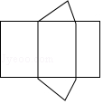
A．三棱柱B．圆锥C．四棱柱D．圆柱
【考点】I6：几何体的展开图．菁优网版权所有
【分析】侧面为三个长方形，底边为三角形，故原几何体为三棱柱．
【解答】解：观察图形可知，这个几何体是三棱柱．
故选：A．
【点评】本题考查的是三棱柱的展开图，考法较新颖，需要对三棱柱有充分的理解．
4．（3分）（2017•北京）实数a，b，c，d在数轴上的对应点的位置如图所示，则正确的结论是（ ）
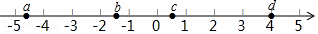
A．a＞﹣4B．bd＞0C．|a|＞|b|D．b+c＞0
【考点】29：实数与数轴．菁优网版权所有
【分析】根据数轴上点的位置关系，可得a，b，c，d的大小，根据有理数的运算，绝对值的性质，可得答案．
【解答】解：由数轴上点的位置，得
a＜﹣4＜b＜0＜c＜1＜d．
A、a＜﹣4，故A不符合题意；
B、bd＜0，故B不符合题意；
C、|a|＞4=|d|，故C符合题意；
D、b+c＜0，故D不符合题意；
故选：C．
【点评】本题考查了实数与数轴，利用数轴上点的位置关系得处a，b，c，d的大小是解题关键．
5．（3分）（2017•北京）下列图形中，是轴对称图形但不是中心对称图形的是（ ）
A．
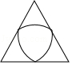
B．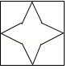
C．D．【考点】R5：中心对称图形；P3：轴对称图形．菁优网版权所有
【分析】根据轴对称图形和中心对称图形的概念对各选项分析判断即可得解．
【解答】解：A、是轴对称图形但不是中心对称图形，故本选项正确；
B、是轴对称图形，也是中心对称图形，故本选项错误；
C、不是轴对称图形，是中心对称图形，故本选项错误；
D、是轴对称图形，也是中心对称图形，故本选项错误．
故选A．
【点评】本题考查了中心对称图形与轴对称图形的概念．轴对称图形的关键是寻找对称轴，图形两部分折叠后可重合，中心对称图形是要寻找对称中心，旋转180度后两部分重合．
6．（3分）（2017•北京）若正多边形的一个内角是150°，则该正多边形的边数是（ ）
A．6B．12C．16D．18
【考点】L3：多边形内角与外角．菁优网版权所有
【分析】根据多边形的内角和，可得答案．
【解答】解：设多边形为n边形，由题意，得
（n﹣2）•180°=150n，
解得n=12，
故选：B．
【点评】本题考查了多边形的内角与外角，利用内角和公式是解题关键．
7．（3分）（2017•北京）如果a2+2a﹣1=0，那么代数式（a﹣
）•
的值是（ ）
A．﹣3B．﹣1C．1D．3
【考点】6D：分式的化简求值．菁优网版权所有
【分析】根据分式的减法和乘法可以化简题目中的式子，然后对a2+2a﹣1=0变形即可解答本题．
【解答】解：（a﹣
）•
=
=
=a（a+2）
=a2+2a，
∵a2+2a﹣1=0，
∴a2+2a=1，
∴原式=1，
故选C．
【点评】本题考查分式的化简求值，解答本题的关键是明确分式化简求值的方法．
8．（3分）（2017•北京）下面的统计图反映了我国与“一带一路”沿线部分地区的贸易情况．
2011﹣2016年我国与东南亚地区和东欧地区的贸易额统计图
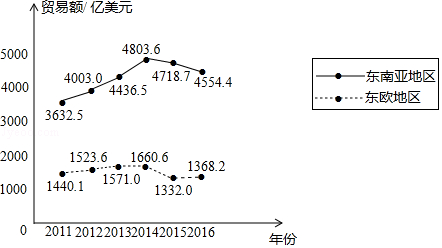
（以上数据摘自《“一带一路”贸易合作大数据报告（2017）》）
根据统计图提供的信息，下列推理不合理的是（ ）
A．与2015年相比，2016年我国与东欧地区的贸易额有所增长
B．2011﹣2016年，我国与东南亚地区的贸易额逐年增长
C．2011﹣2016年，我国与东南亚地区的贸易额的平均值超过4200亿美元
D．2016年我国与东南亚地区的贸易额比我国与东欧地区的贸易额的3倍还多
【考点】VD：折线统计图．菁优网版权所有
【分析】利用折线统计图结合相应数据，分别分析得出符合题意的答案．
【解答】解：A、由折线统计图可得：
与2015年相比，2016年我国与东欧地区的贸易额有所增长，正确，不合题意；
B、由折线统计图可得：2011﹣2014年，我国与东南亚地区的贸易额逐年增长，故此选项错误，符合题意；
C、2011﹣2016年，我国与东南亚地区的贸易额的平均值为：
（3632.5+4003.0+4436.5+4803.6+4718.7+4554.4）÷6≈4358，
故超过4200亿美元，正确，不合题意，
D、∵4554.4÷1368.2≈3.33，
∴2016年我国与东南亚地区的贸易额比我国与东欧地区的贸易额的3倍还多，
故选：B．
【点评】此题主要考查了折线统计图，利用折线统计图获取正确信息是解题关键．
9．（3分）（2017•北京）小苏和小林在如图1所示的跑道上进行4×50米折返跑．在整个过程中，跑步者距起跑线的距离y（单位：m）与跑步时间t（单位：s）的对应关系如图2所示．下列叙述正确的是（ ）
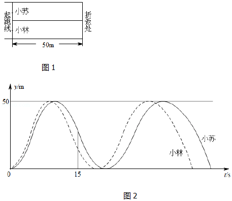
A．两人从起跑线同时出发，同时到达终点
B．小苏跑全程的平均速度大于小林跑全程的平均速度
C．小苏前15s跑过的路程大于小林前15s跑过的路程
D．小林在跑最后100m的过程中，与小苏相遇2次
【考点】E6：函数的图象．菁优网版权所有
【分析】通过函数图象可得，两人从起跑线同时出发，小林先到达终点，小苏后到达终点，小苏用的时间多，而路程相同，根据速度=
，根据行程问题的数量关系可以求出甲、乙的速度，所以小苏跑全程的平均速度小于小林跑全程的平均速度，根据图象小苏前15s跑过的路程小于小林前15s跑过的路程，两人相遇时，即实线与虚线相交的地方有两次，即可解答．
【解答】解：由函数图象可知：两人从起跑线同时出发，先后到达终点，小林先到达终点，故A错误；
根据图象两人从起跑线同时出发，小林先到达终点，小苏后到达终点，小苏用的时间多，而路程相同，根据速度=
，所以小苏跑全程的平均速度小于小林跑全程的平均速度，故B错误；
根据图象小苏前15s跑过的路程小于小林前15s跑过的路程，故C错误；
小林在跑最后100m的过程中，两人相遇时，即实线与虚线相交的地方，由图象可知2次，故D正确；
故选：D．
【点评】本题主要考查了函数图象的读图能力，要能根据函数图象的性质和图象上的数据分析得出函数的类型和所需要的条件，结合实际意义得到正确的结论．
10．（3分）（2017•北京）如图显示了用计算机模拟随机投掷一枚图钉的某次实验的结果．
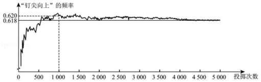
下面有三个推断：
①当投掷次数是500时，计算机记录“钉尖向上”的次数是308，所以“钉尖向上”的概率是0.616；
②随着实验次数的增加，“钉尖向上”的频率总在0.618附近摆动，显示出一定的稳定性，可以估计“钉尖向上”的概率是0.618；
③若再次用计算机模拟实验，则当投掷次数为1000时，“钉尖向上”的概率一定是0.620．
其中合理的是（ ）
A．①B．②C．①②D．①③
【考点】X8：利用频率估计概率．菁优网版权所有
【分析】根据图形和各个小题的说法可以判断是否正确，从而可以解答本题．
【解答】解：当投掷次数是500时，计算机记录“钉尖向上”的次数是308，所以此时“钉尖向上”的可能性是：308÷500=0.616，但“钉尖向上”的概率不一定是0.616，故①错误，
随着实验次数的增加，“钉尖向上”的频率总在0.618附近摆动，显示出一定的稳定性，可以估计“钉尖向上”的概率是0.618．故②正确，
若再次用计算机模拟实验，则当投掷次数为1000时，“钉尖向上”的概率可能是0.620，但不一定是0.620，故③错误，
故选B．
【点评】本题考查利用频率估计概率，解答本题的关键是明确概率的定义，利用数形结合的思想解答．
二、填空题（本题共18分，每题3分）
11．（3分）（2017•北京）写出一个比3大且比4小的无理数： π ．
【考点】26：无理数．菁优网版权所有
【分析】根据无理数的定义即可．
【解答】解：写出一个比3大且比4小的无理数：π，
故答案为：π．
【点评】此题主要考查了无理数的定义，注意带根号的要开不尽方才是无理数，无限不循环小数为无理数．如π，
，0.8080080008…（每两个8之间依次多1个0）等形式．
12．（3分）（2017•北京）某活动小组购买了4个篮球和5个足球，一共花费了435元，其中篮球的单价比足球的单价多3元，求篮球的单价和足球的单价．设篮球的单价为x元，足球的单价为y元，依题意，可列方程组为
．
【考点】99：由实际问题抽象出二元一次方程组．菁优网版权所有
【分析】根据题意可得等量关系：①4个篮球的花费+5个足球的花费=435元，②篮球的单价﹣足球的单价=3元，根据等量关系列出方程组即可．
【解答】解：设篮球的单价为x元，足球的单价为y元，由题意得：
，
故答案为：
．
【点评】此题主要考查了由实际问题抽象出二元一次方程组，关键是正确理解题意，找出题目中的等量关系．
13．（3分）（2017•北京）如图，在△ABC中，M、N分别为AC，BC的中点．若S△CMN=1，则S四边形ABNM= 3 ．
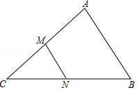
【考点】S9：相似三角形的判定与性质；KX：三角形中位线定理．菁优网版权所有
【分析】证明MN是△ABC的中位线，得出MN∥AB，且MN=
AB，证出△CMN∽△CAB，根据面积比等于相似比平方求出△CMN与△CAB的比，继而可得出△CMN的面积与四边形ABNM的面积比．最后求出结论．
【解答】解：∵M，N分别是边AC，BC的中点，
∴MN是△ABC的中位线，
∴MN∥AB，且MN=
AB，
∴△CMN∽△CAB，
∴
=（
）2=
，
∴
=
，
∴S四边形ABNM=3S△AMN=3×1=3．
故答案为：3．
【点评】本题考查了相似三角形的判定与性质、三角形中位线定理；熟练掌握三角形中位线定理，证明三角形相似是解决问题的关键．
14．（3分）（2017•北京）如图，AB为⊙O的直径，C、D为⊙O上的点，AD=CD．若∠CAB=40°，则∠CAD= 25° ．
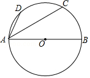
【考点】M5：圆周角定理．菁优网版权所有
【分析】先根据AD=CD得出
=
，再由AB为⊙O的直径，∠CAB=40°得出
的度数，进而可得出
的度数，据此可得出结论．
【解答】解：∵AD=CD，
∴
=
．
∵AB为⊙O的直径，∠CAB=40°，
∴
=80°，
∴
=180°﹣80°=100°，
∴
=
=50°，
∴∠CAD=25°．
故答案为：25°．
【点评】本题考查的是圆周角定理，弧、弦的关系，根据题意得出
的度数是解答此题的关键．
15．（3分）（2017•北京）如图，在平面直角坐标系xOy中，△AOB可以看作是△OCD经过若干次图形的变化（平移、轴对称、旋转）得到的，写出一中由△OCD得到△AOB的过程： △OCD绕C点旋转90°，并向左平移2个单位得到△AOB ．
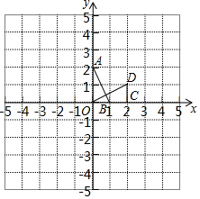
【考点】R7：坐标与图形变化﹣旋转；P6：坐标与图形变化﹣对称；Q3：坐标与图形变化﹣平移．菁优网版权所有
【分析】根据旋转的性质，平移的性质即可得到由△OCD得到△AOB的过程．
【解答】解：△OCD绕C点旋转90°，并向左平移2个单位得到△AOB（答案不唯一）．
故答案为：△OCD绕C点旋转90°，并向左平移2个单位得到△AOB．
【点评】考查了坐标与图形变化﹣旋转，平移，对称，解题时需要注意：平移的距离等于对应点连线的长度，对称轴为对应点连线的垂直平分线，旋转角为对应点与旋转中心连线的夹角的大小．
16．（3分）（2017•北京）图1是“作已知直角三角形的外接圆”的尺规作图过程
已知：Rt△ABC，∠C=90°，求作Rt△ABC的外接圆．
作法：如图2．
（1）分别以点A和点B为圆心，大于
的长为半径作弧，两弧相交于P，Q两点；
（2）作直线PQ，交AB于点O；
（3）以O为圆心，OA为半径作⊙O．⊙O即为所求作的圆．
请回答：该尺规作图的依据是 到线段两端点的距离相等的点在这条线段的垂直平分线上；90°的圆周角所的弦是直径 ．
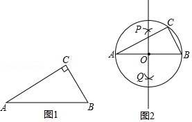
【考点】N3：作图—复杂作图；MA：三角形的外接圆与外心．菁优网版权所有
【专题】13 ：作图题．
【分析】由于90°的圆周角所的弦是直径，所以Rt△ABC的外接圆的圆心为AB的中点，然后作AB的中垂线得到圆心后即可得到Rt△ABC的外接圆．
【解答】解：该尺规作图的依据是到线段两端点的距离相等的点在这条线段的垂直平分线上；90°的圆周角所的弦是直径．
故答案为到线段两端点的距离相等的点在这条线段的垂直平分线上；90°的圆周角所的弦是直径．
【点评】本题考查了作图﹣复杂作图：复杂作图是在五种基本作图的基础上进行作图，一般是结合了几何图形的性质和基本作图方法．解决此类题目的关键是熟悉基本几何图形的性质，结合几何图形的基本性质把复杂作图拆解成基本作图，逐步操作．
三、解答题（本题共72分，第17题-26题，每小题5分，第27题7分，第28题7分，第29题8分）解答应写出文字说明、证明过程或演算步骤.
17．（5分）（2017•北京）计算：4cos30°+（1﹣
）0﹣
+|﹣2|．
【考点】2C：实数的运算；6E：零指数幂；T5：特殊角的三角函数值．菁优网版权所有
【分析】首先利用二次根式的性质以及特殊角的三角函数值、绝对值的性质分别化简得出答案．
【解答】解：原式=4×
+1﹣2
+2
=2
﹣2
+3
=3．
【点评】此题主要考查了实数运算，正确化简各数是解题关键．
18．（5分）（2017•北京）解不等式组：
．
【考点】CB：解一元一次不等式组．菁优网版权所有
【分析】利用不等式的性质，先求出两个不等式的解集，再求其公共解．
【解答】解：
，
由①式得x＜3；
由②式得x＜2，
所以不等式组的解为x＜2．
【点评】此题考查解不等式组；求不等式组的解集，要遵循以下原则：同大取较大，同小取较小，小大大小中间找，大大小小解不了．
19．（5分）（2017•北京）如图，在△ABC中，AB=AC，∠A=36°，BD平分∠ABC交AC于点D．
求证：AD=BC．
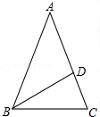
【考点】KJ：等腰三角形的判定与性质．菁优网版权所有
【分析】根据等腰三角形的性质得到∠ABC=C=72°，根据角平分线的定义得到∠ABD=∠DBC=36°，∠BDC=72°，根据等腰三角形的判定即可得到结论．
【解答】证明：∵AB=AC，∠A=36°，
∴∠ABC=C=72°，
∵BD平分∠ABC交AC于点D，
∴∠ABD=∠DBC=36°，∠BDC=72°，
∴∠A=∠ABD，∠BDC=∠C，
∴AD=BD=BC．
【点评】本题主要考查等腰三角形的性质和判定，掌握等边对等角是解题的关键，注意三角形内角和定理的应用．
20．（5分）（2017•北京）数学家吴文俊院士非常重视古代数学家贾宪提出的“从长方形对角线上任一点作两条分别平行于两邻边的直线，则所容两长方形面积相等（如图所示）”这一推论，他从这一推论出发，利用“出入相补”原理复原了《海岛算经》九题古证．
（以上材料来源于《古证复原的原理》、《吴文俊与中国数学》和《古代世界数学泰斗刘徽》）
请根据该图完成这个推论的证明过程．
证明：S矩形NFGD=S△ADC﹣（S△ANF+S△FGC），S矩形EBMF=S△ABC﹣（ S△AEF + S△FCM ）．
易知，S△ADC=S△ABC， S△ANF = S△AEF ， S△FGC = S△FMC ．
可得S矩形NFGD=S矩形EBMF．
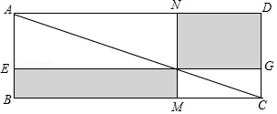
【考点】LB：矩形的性质．菁优网版权所有
【分析】根据矩形的性质：矩形的对角线把矩形分成面积相等的两部分，由此即可证明结论．
【解答】证明：S矩形NFGD=S△ADC﹣（S△ANF+S△FGC），S矩形EBMF=S△ABC﹣（ S△ANF+S△FCM）．
易知，S△ADC=S△ABC，S△ANF=S△AEF，S△FGC=S△FMC，
可得S矩形NFGD=S矩形EBMF．
故答案分别为 S△AEF，S△FCM，S△ANF，S△AEF，S△FGC，S△FMC．
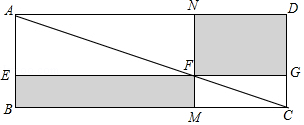
【点评】本题考查矩形的性质，解题的关键是灵活运用矩形的对角线把矩形分成面积相等的两部分这个性质，属于中考常考题型．
21．（5分）（2017•北京）关于x的一元二次方程x2﹣（k+3）x+2k+2=0．
（1）求证：方程总有两个实数根；
（2）若方程有一根小于1，求k的取值范围．
【考点】AA：根的判别式．菁优网版权所有
【分析】（1）根据方程的系数结合根的判别式，可得△=（k﹣1）2≥0，由此可证出方程总有两个实数根；
（2）利用分解因式法解一元二次方程，可得出x1=2、x2=k+1，根据方程有一根小于1，即可得出关于k的一元一次不等式，解之即可得出k的取值范围．
【解答】（1）证明：∵在方程x2﹣（k+3）x+2k+2=0中，△=[﹣（k+3）]2﹣4×1×（2k+2）=k2﹣2k+1=（k﹣1）2≥0，
∴方程总有两个实数根．
（2）解：∵x2﹣（k+3）x+2k+2=（x﹣2）（x﹣k﹣1）=0，
∴x1=2，x2=k+1．
∵方程有一根小于1，
∴k+1＜1，解得：k＜0，
∴k的取值范围为k＜0．
【点评】本题考查了根的判别式、因式分解法解一元二次方程以及解一元一次不等式，解题的关键是：（1）牢记“当△≥0时，方程有两个实数根”；（2）利用因式分解法解一元二次方程结合方程一根小于1，找出关于k的一元一次方程．
22．（5分）（2017•北京）如图，在四边形ABCD中，BD为一条对角线，AD∥BC，AD=2BC，∠ABD=90°，E为AD的中点，连接BE．
（1）求证：四边形BCDE为菱形；
（2）连接AC，若AC平分∠BAD，BC=1，求AC的长．
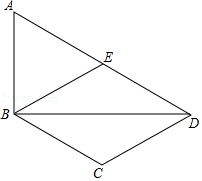
【考点】LA：菱形的判定与性质；KP：直角三角形斜边上的中线．菁优网版权所有
【分析】（1）由DE=BC，DE∥BC，推出四边形BCDE是平行四边形，再证明BE=DE即可解决问题；
（2）在Rt△只要证明∠ADC=60°，AD=2即可解决问题；
【解答】（1）证明：∵AD=2BC，E为AD的中点，
∴DE=BC，
∵AD∥BC，
∴四边形BCDE是平行四边形，
∵∠ABD=90°，AE=DE，
∴BE=DE，
∴四边形BCDE是菱形．
（2）解：连接AC．
∵AD∥BC，AC平分∠BAD，
∴∠BAC=∠DAC=∠BCA，
∴AB=BC=1，
∵AD=2BC=2，
∴sin∠ADB=
，
∴∠ADB=30°，
∴∠DAC=30°，∠ADC=60°，
在Rt△ACD中，∵AD=2，
∴CD=1，AC=
．
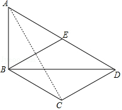
【点评】本题考查菱形的判定和性质、直角三角形斜边中线的性质、锐角三角函数等知识，解题的关键是熟练掌握菱形的判定方法，属于中考常考题型．
23．（5分）（2017•北京）如图，在平面直角坐标系xOy中，函数y=
（x＞0）的图象与直线y=x﹣2交于点A（3，m）．
（1）求k、m的值；
（2）已知点P（n，n）（n＞0），过点P作平行于x轴的直线，交直线y=x﹣2于点M，过点P作平行于y轴的直线，交函数y=
（x＞0）的图象于点N．
①当n=1时，判断线段PM与PN的数量关系，并说明理由；
②若PN≥PM，结合函数的图象，直接写出n的取值范围．
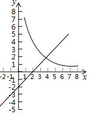
【考点】G8：反比例函数与一次函数的交点问题．菁优网版权所有
【分析】（1）将A点代入y=x﹣2中即可求出m的值，然后将A的坐标代入反比例函数中即可求出k的值．
（2）①当n=1时，分别求出M、N两点的坐标即可求出PM与PN的关系；
②由题意可知：P的坐标为（n，n），由于PN＞PM，从而可知PN≥2，根据图象可求出n的范围．
【解答】解：（1）将A（3，m）代入y=x﹣2，
∴m=3﹣2=1，
∴A（3，1），
将A（3，1）代入y=
，
∴k=3×1=3，
（2）①当n=1时，P（1，1），
令y=1，代入y=x﹣2，
x﹣2=1，
∴x=3，
∴M（3，1），
∴PM=2，
令x=1代入y=
，
∴y=3，
∴N（1，3），
∴PM=2
∴PM=PN，
②P（n，n），
点P在直线y=x上，
过点P作平行于x轴的直线，交直线y=x﹣2于点M，
M（n+2，n），
∴PM=2，
∵PN≥PM，
即PN≥2，
∴0＜n≤1或n≥3
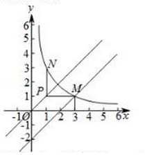
【点评】本题考查反比例函数与一次函数的综合问题，解题的关键是求出反比例函数与一次函数的解析式，本题属于基础题型．
24．（5分）（2017•北京）如图，AB是⊙O的一条弦，E是AB的中点，过点E作EC⊥OA于点C，过点B作⊙O的切线交CE的延长线于点D．
（1）求证：DB=DE；
（2）若AB=12，BD=5，求⊙O的半径．

【考点】MC：切线的性质；KQ：勾股定理；M2：垂径定理．菁优网版权所有
【分析】（1）欲证明DB=DE，只要证明∠DEB=∠DBE；
（2）作DF⊥AB于F，连接OE．只要证明∠AOE=∠DEF，可得sin∠DEF=sin∠AOE=
=
，由此求出AE即可解决问题．
【解答】（1）证明：∵AO=OB，
∴∠OAB=∠OBA，
∵BD是切线，
∴OB⊥BD，
∴∠OBD=90°，
∴∠OBE+∠EBD=90°，
∵EC⊥OA，
∴∠CAE+∠CEA=90°，
∵∠CEA=∠DEB，
∴∠EBD=∠BED，
∴DB=DE．
（2）作DF⊥AB于F，连接OE．
∵DB=DE，AE=EB=6，
∴EF=
BE=3，OE⊥AB，
在Rt△EDF中，DE=BD=5，EF=3，
∴DF=
=4，
∵∠AOE+∠A=90°，∠DEF+∠A=90°，
∴∠AOE=∠DEF，
∴sin∠DEF=sin∠AOE=
=
，
∵AE=6，
∴AO=
．
∴⊙O的半径为
．

【点评】本题考查切线的性质、勾股定理、垂径定理、锐角三角函数、等腰三角形的性质等知识，解题的关键是学会添加常用辅助线，灵活运用所学知识解决问题，属于中考常考题型．
25．（5分）（2017•北京）某工厂甲、乙两个部门各有员工400人，为了解这两个部门员工的生产技能情况，进行了抽样调查，过程如下，请补充完整．
收集数据
从甲、乙两个部门各随机抽取20名员工，进行了生产技能测试，测试成绩（百分制）如下：
甲 78 86 74 81 75 76 87 70 75 90 75 79 81 70 74 80 86 69 83 77
乙 93 73 88 81 72 81 94 83 77 83 80 81 70 81 73 78 82 80 70 40
整理、描述数据
按如下分数段整理、描述这两组样本数据：
成绩x 人数 部门 | 40≤x≤49 | 50≤x≤59 | 60≤x≤69 | 70≤x≤79 | 80≤x≤89 | 90≤x≤100 |
甲 | 0 | 0 | 1 | 11 | 7 | 1 |
乙 | 1 | 0 | 0 | 7 | 10 | 2 |
（说明：成绩80分及以上为生产技能优秀，70﹣﹣79分为生产技能良好，60﹣﹣69分为生产技能合格，60分以下为生产技能不合格）
分析数据
两组样本数据的平均数、中位数、众数如下表所示：
部门 | 平均数 | 中位数 | 众数 |
甲 | 78.3 | 77.5 | 75 |
乙 | 78 | 80.5 | 81 |
得出结论：a．估计乙部门生产技能优秀的员工人数为 200 ；b．可以推断出 甲或乙 部门员工的生产技能水平较高，理由为 ①甲部门生产技能测试中，平均分较高，表示甲部门员工的生产技能水平较高；
②甲部门生产技能测试中，没有技能不合格的员工，表示甲部门员工的生产技能水平较高．
或①甲部门生产技能测试中，中位数较高，表示乙部门员工的生产技能水平较高；
②甲部门生产技能测试中，众数较高，表示乙部门员工的生产技能水平较高． ．（至少从两个不同的角度说明推断的合理性）
【考点】W5：众数；V5：用样本估计总体；V7：频数（率）分布表；W2：加权平均数；W4：中位数．菁优网版权所有
【分析】根据收集数据填写表格即可求解；
用乙部门优秀员工人数除以20乘以400即可得出答案，根据情况进行讨论分析，理由合理即可．
【解答】解：填表如下：
成绩x 人数 部门 | 40≤x≤49 | 50≤x≤59 | 60≤x≤69 | 70≤x≤79 | 80≤x≤89 | 90≤x≤100 |
甲 | 0 | 0 | 1 | 11 | 7 | 1 |
乙 | 1 | 0 | 0 | 7 | 10 | 2 |
a.
×400=240（人）．
故估计乙部门生产技能优秀的员工人数为 200；
b．答案不唯一，理由合理即可．
可以推断出甲部门员工的生产技能水平较高，理由为：
①甲部门生产技能测试中，平均分较高，表示甲部门员工的生产技能水平较高；
②甲部门生产技能测试中，没有技能不合格的员工，表示甲部门员工的生产技能水平较高．
或可以推断出乙部门员工的生产技能水平较高，理由为：
①甲部门生产技能测试中，中位数较高，表示乙部门员工的生产技能水平较高；
②甲部门生产技能测试中，众数较高，表示乙部门员工的生产技能水平较高．
故答案为：1，0，0，7，10，2；
200；甲或乙，①甲部门生产技能测试中，平均分较高，表示甲部门员工的生产技能水平较高；
②甲部门生产技能测试中，没有技能不合格的员工，表示甲部门员工的生产技能水平较高；
或①甲部门生产技能测试中，中位数较高，表示乙部门员工的生产技能水平较高；
②甲部门生产技能测试中，众数较高，表示乙部门员工的生产技能水平较高．
【点评】本题考查了众数、中位数以及平均数，掌握众数、中位数以及平均数的定义以及用样本估计总体是解题的关键．
26．（5分）（2017•北京）如图，P是AB所对弦AB上一动点，过点P作PM⊥AB交AB于点M，连接MB，过点P作PN⊥MB于点N．已知AB=6cm，设A、P两点间的距离为xcm，P、N两点间的距离为ycm．（当点P与点A或点B重合时，y的值为0）
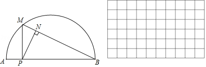
小东根据学习函数的经验，对函数y随自变量x的变化而变化的规律进行了探究．
下面是小东的探究过程，请补充完整：
（1）通过取点、画图、测量，得到了x与y的几组值，如下表：
x/cm | 0 | 1 | 2 | 3 | 4 | 5 | 6 |
y/cm | 0 | 2.0 | 2.3 | 2.1 | 1.6 | 0.9 | 0 |
（说明：补全表格时相关数值保留一位小数）
（2）建立平面直角坐标系，描出以补全后的表中各对对应值为坐标的点，画出该函数的图象．
（3）结合画出的函数图象，解决问题：当△PAN为等腰三角形时，AP的长度约为 2.2 cm．
【考点】MR：圆的综合题．菁优网版权所有
【分析】（1）利用取点，测量的方法，即可解决问题；
（2）利用描点法，画出函数图象即可；
（3）作出直线y=x与图象的交点，交点的横坐标即可AP的长．
【解答】解：（1）通过取点、画图、测量可得x﹣4时，y=1.6cm，
故答案为1.6．
（2）利用描点法，图象如图所示．
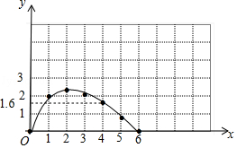
（3）当△PAN为等腰三角形时，x=y，作出直线y=x与图象的交点坐标为（2.2，2.2），
∴△PAN为等腰三角形时，PA=2.2cm．
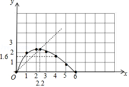
故答案为2.2．
【点评】本题考查圆综合题、坐标与图形的关系等知识，解题的关键是理解题意，学会用测量法、图象法解决实际问题，属于中考压轴题．
27．（7分）（2017•北京）在平面直角坐标系xOy中，抛物线y=x2﹣4x+3与x轴交于点A、B（点A在点B的左侧），与y轴交于点C．
（1）求直线BC的表达式；
（2）垂直于y轴的直线l与抛物线交于点P（x1，y1），Q（x2，y2），与直线BC交于点N（x3，y3），若x1＜x2＜x3，结合函数的图象，求x1+x2+x3的取值范围．
【考点】HA：抛物线与x轴的交点．菁优网版权所有
【分析】（1）利用抛物线解析式求得点B、C的坐标，利用待定系数法求得直线BC的表达式即可；
（2）由抛物线解析式得到对称轴和顶点坐标，结合图形解答．
【解答】解：（1）由y=x2﹣4x+3得到：y=（x﹣3）（x﹣1），C（0，3）．
所以A（1，0），B（3，0），
设直线BC的表达式为：y=kx+b（k≠0），
则
，
解得
，
所以直线BC的表达式为y=﹣x+3；
（2）由y=x2﹣4x+3得到：y=（x﹣2）2﹣1，
所以抛物线y=x2﹣4x+3的对称轴是x=2，顶点坐标是（2，﹣1）．
∵y1=y2，
∴x1+x2=4．
令y=﹣1，y=﹣x+3，x=4．
∵x1＜x2＜x3，
∴3＜x3＜4，即7＜x1+x2+x3＜8．

【点评】本题考查了抛物线与x轴的交点．解答（2）题时，利用了“数形结合”的数学思想，降低了解题的难度．
28．（7分）（2017•北京）在等腰直角△ABC中，∠ACB=90°，P是线段BC上一动点（与点B、C不重合），连接AP，延长BC至点Q，使得CQ=CP，过点Q作QH⊥AP于点H，交AB于点M．
（1）若∠PAC=α，求∠AMQ的大小（用含α的式子表示）．
（2）用等式表示线段MB与PQ之间的数量关系，并证明．
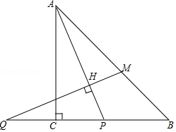
【考点】KD：全等三角形的判定与性质；KW：等腰直角三角形．菁优网版权所有
【分析】（1）由等腰直角三角形的性质得出∠BAC=∠B=45°，∠PAB=45°﹣α，由直角三角形的性质即可得出结论；
（2）连接AQ，作ME⊥QB，由AAS证明△APC≌△QME，得出PC=ME，△AEB是等腰直角三角形，由等腰直角三角形的性质即可得出结论．
【解答】解：（1）∠AMQ=45°+α；理由如下：
∵∠PAC=α，△ACB是等腰直角三角形，
∴∠BAC=∠B=45°，∠PAB=45°﹣α，
∵QH⊥AP，
∴∠AHM=90°，
∴∠AMQ=180°﹣∠AHM﹣∠PAB=45°+α；
（2）PQ=
MB；理由如下：
连接AQ，作ME⊥QB，如图所示：
∵AC⊥QP，CQ=CP，
∴∠QAC=∠PAC=α，
∴∠QAM=45°+α=∠AMQ，
∴AP=AQ=QM，
在△APC和△QME中，
，
∴△APC≌△QME（AAS），
∴PC=ME，
∴△AEB是等腰直角三角形，
∴
PQ=
MB，
∴PQ=
MB．
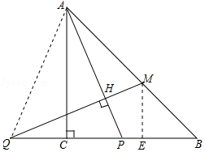
【点评】本题考查了全等三角形的判定与性质、等腰直角三角形的判定与性质、勾股定理；熟练掌握等腰直角三角形的判定与性质，证明三角形全等是解决问题的关键．
29．（8分）（2017•北京）在平面直角坐标系xOy中的点P和图形M，给出如下的定义：若在图形M上存在一点Q，使得P、Q两点间的距离小于或等于1，则称P为图形M的关联点．
（1）当⊙O的半径为2时，
①在点P1（
，0），P2（
，
），P3（
，0）中，⊙O的关联点是 P2，P3 ．
②点P在直线y=﹣x上，若P为⊙O的关联点，求点P的横坐标的取值范围．
（2）⊙C的圆心在x轴上，半径为2，直线y=﹣x+1与x轴、y轴交于点A、B．若线段AB上的所有点都是⊙C的关联点，直接写出圆心C的横坐标的取值范围．
【考点】FI：一次函数综合题．菁优网版权所有
【分析】（1）①根据点P1（
，0），P2（
，
），P3（
，0），求得P1=
，P2=1，OP3=
，于是得到结论；②根据定义分析，可得当最小y=﹣x上的点P到原点的距离在1到3之间时符合题意，设P（x，﹣x），根据两点间的距离公式得到即可得到结论；
（2根据已知条件得到A（1，0），B（0，1），如图1，当圆过点A时，得到C（﹣2，0），如图2，当直线AB与小圆相切时，切点为D，得到C（1﹣
，0），于是得到结论；如图3，当圆过点A，则AC=1，得到C（2，0），如图4，当圆过点B，连接BC，根据勾股定理得到C（2
，0），于是得到结论．
【解答】解：（1）①∵点P1（
，0），P2（
，
），P3（
，0），
∴OP1=
，OP2=1，OP3=
，
∴P1与⊙O的最小距离为
，P2与⊙O的最小距离为1，OP3与⊙O的最小距离为
，
∴⊙O，⊙O的关联点是P2，P3；
故答案为：P2，P3；
②根据定义分析，可得当最小y=﹣x上的点P到原点的距离在1到3之间时符合题意，
∴设P（x，﹣x），当OP=1时，
由距离公式得，OP=
=1，
∴x=
，
当OP=3时，OP=
=3，
解得：x=±
；
∴点P的横坐标的取值范围为：﹣
≤≤﹣
，或
≤x≤
；
（2）∵直线y=﹣x+1与x轴、y轴交于点A、B，
∴A（1，0），B（0，1），
如图1，

当圆过点A时，此时，CA=3，
∴C（﹣2，0），
如图2，

当直线AB与小圆相切时，切点为D，
∴CD=1，
∵直线AB的解析式为y=﹣x+1，
∴直线AB与x轴的夹角=45°，
∴AC=
，
∴C（1﹣
，0），
∴圆心C的横坐标的取值范围为：﹣2≤xC≤1﹣
；
如图3，

当圆过点A，则AC=1，∴C（2，0），
如图4，

当圆过点B，连接BC，此时，BC=3，
∴OC=
=2
，
∴C（2
，0）．
∴圆心C的横坐标的取值范围为：2≤xC≤2
；
综上所述；圆心C的横坐标的取值范围为：﹣2≤xC≤1﹣
或2≤xC≤2
．
【点评】本题考查了一次函数的性质，勾股定理，直线与圆的位置关系，两点间的距离公式，正确的作出图形是解题的关键．